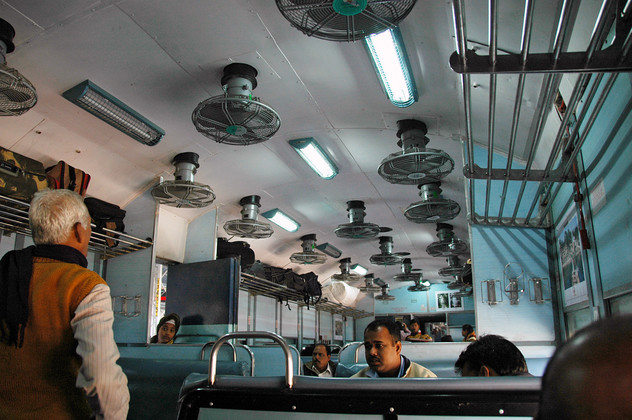
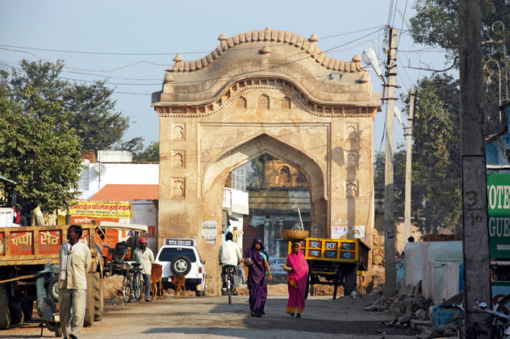

Nachdem der abendliche Blick aufs Taj Mahal ausgefallen ist, weil er abends nicht beleuchtet wird, sind wir extra früh aufgestanden, um wenigstens einen Blick im Morgengrauen auf das Mausoleum werfen zu können. Von der Dachterasse unseres Hotels hatten wir eine wunderbare Aussicht. Die diesige Morgenluft entrückt den Taj Mahal noch mehr, lässt ihn noch überirdischer erscheinen.
Anschließend haben wir versucht, unsere Zug-Pleite wett zu machen. Hoffnungsvoll sind wir zum Bahnhof gefahren, um nach Jhansi zu gelangen. Unsere Zeitpolster waren diesmal zwar übertrieben groß, aber nachdem uns jeder Schalter an einen anderen geschickt hatte, haben wir endlich unser Ticket bekommen. Die Bahnsteige sind mit Schläuchen versehen, mit denen in den Haltepausen die Zuglatrinen durchgespült werden. Das hat die Wartezeit zu einem olfaktorischen Missvergnügen werden lassen. Die Zugfahrt in der berüchtigten und nicht empfohlenen unreserved class war jedoch angenehm.
So kamen wir zwangsläufig etwas mehr in Kontakt mit Einheimischen, was uns vor allem die Bekanntschaft einer Heerschar von Bettlern und Schrottverkäufern eingebracht hat. Kinder haben kleine Vorführungen im Gang gegeben, wobei sie sich derart unnatürlich verbogen haben, dass ihnen wahrscheinlich eine große Zukunft als Straßenkrüppel blüht, die in Delhi die verstopften Kreuzungen schmücken.
In Jhansi angekommen sind wir direkt in eine Rikscha nach Orchha umgestiegen. Das knapp 20km südlich gelegene Dorf wartet mit einer großen Palastanlage auf, die über eine alte Brücke mit dem Dorf verbunden ist. Der Betwa führt zwar wenig Wasser, bietet aber ein malerisches Bild auf die lange Befestigungsmauer. Im Dorf gibt es neben einem schönen Markt einige hinduistische Tempel, unter denen der Chaturbhuj der Massivste ist. Vor allem geht es hier aber recht entspannt zu. Die Leute sind sehr freundlich und lassen das sonst übliche Generve einfach weg.
